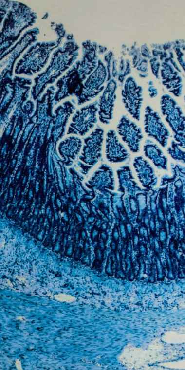
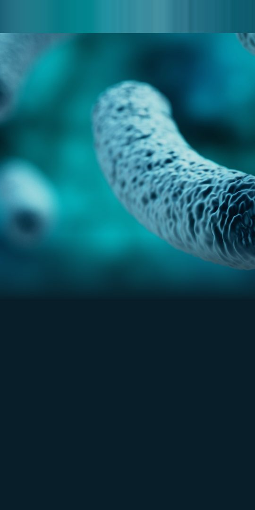
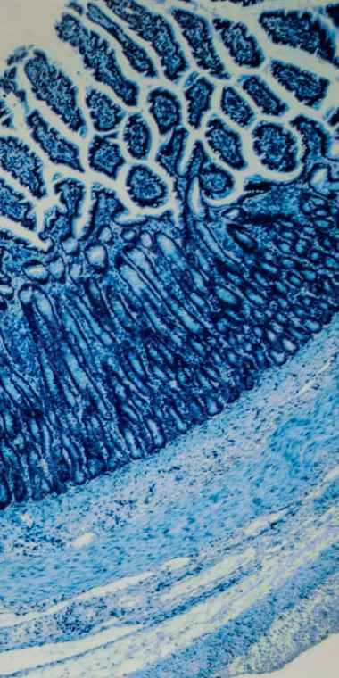
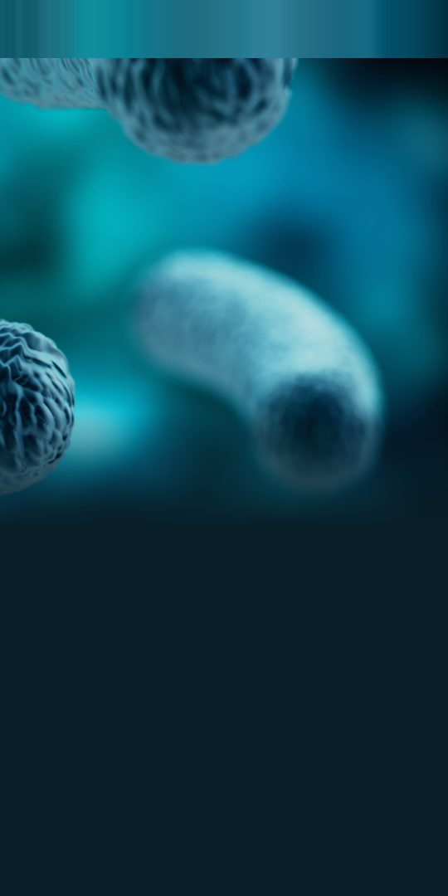

Seres led VOWST’s development and FDA approval, then sold it to Nestlé Health Science.

irEC: gut inflammation caused by cancer immunotherapy. Open-label study, 15 patients at MSK; small, uncontrolled.

A planned study of SER-155 to prevent irEC in people starting checkpoint-inhibitor therapy.

Randomized cohort vs placebo, 10% vs 42.9% through day 100. Published Nov 3, 2026.
SER-155 is investigational and not FDA-approved; early results may not predict later studies. *Company estimate. Study plans and timing are forward-looking (Nov 4, 2026); see SEC filings for risk factors.